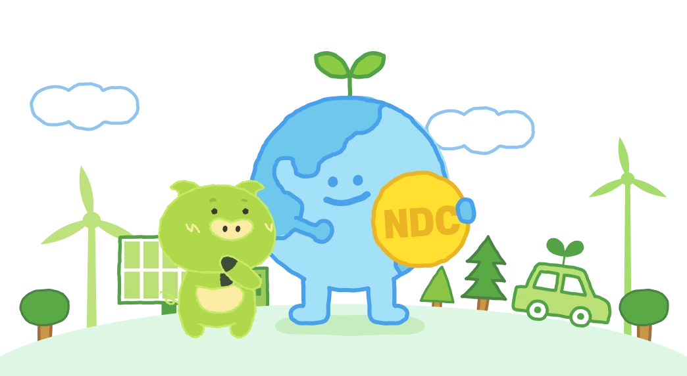

NDC란?
2035 국가온실가스감축목표(NDC)는 온실가스 감축 목표와 실천 방안을 담고 있습니다
국가온실가스감축목표(NDC) 수립 배경
기후변화 문제의 대두
인간 활동이 기후변화에 영향을 준다는 과학적 경고는 1980년대부터 본격적으로 주목받기 시작했습니다.
가장 초기에는 영국의 공학자 가이 스튜어트 캘린더(Guy Stewart Callendar)가 화석연료 연소로 발생한 이산화탄소가 기후 변화에 큰 영향을 줄 수 있다는 가설을 제기했습니다 (1988년).
이전까지는 기후 변화에 대한 논의가 과학자들 사이에 국한되었지만, 그 심각성이 점차 사회 전반으로 알려지며 기후위기는 전 지구적 문제로 인식되기 시작했습니다.
이에 따라 유엔환경계획(UNEP)과 세계기상기구(WMO)의 지원 아래 1988년 기후변화에 관한 정부간 협의체(IPCC)가 창설되었고,
기후변화의 영향과 대응 방안을 종합적으로 검토하는 ‘평가보고서(AR, Assessment Report)’를 작성하기 시작했습니다.
해당 보고서는 2023년까지 총 6차 보고서 발간되었으며, 전 세계 정책 수립과 기후 협약의 근거 자료로 활용되고 있습니다.
파리협정에 따라 각국은 스스로 NDC를 설정
NDC는 Nationally Determined Contribution의 약자입니다. 우리말로 그대로 해석하면 ‘국가적으로 결정한 기여’라고 할 수 있죠. 이것은 전 세계적인 기후변화 현상을 완화하기 위해
각 국가들이 온실가스를 얼마나 감축할지 스스로 결정한다는 의미라서, 보통 ‘국가 온실가스 감축 목표’라고 부릅니다. 2030NDC라고 하면 2030년까지 한 국가가 온실가스를 얼마나
감축할지 정한 목표입니다.
그럼 이 NDC는 우리나라만 정하는 걸까요? 아닙니다. 190개가 넘는 국가들이 모두 설정하는데요, 그 이유를 알려면 ‘파리협정’부터 살펴볼 필요가 있습니다. 1992년, 기후변화에
전 세계적으로 대응하기 위해 ‘유엔기후변화협약(UNFCCC)’이 만들어졌습니다. 여기서 각 나라들이 지켜야 할 사항을 정한 하부 조약을 체결했는데,
현재 작동하는 조약이 2015년에 만든 ‘파리협정’입니다. 파리협정의 목표는 지구의 평균온도를 산업화 시기(약 1850~1900년)에 비해 2℃보다 현저히 낮은 수준으로 유지하고,
1.5℃ 이상은 올라가지 않도록 억제 노력을 하는 것입니다.
이 목표를 이루려면 전 세계 모든 나라들이 온실가스를 줄여야 하는데요,
파리협정은 이 협정에 가입한 모든 나라들이 스스로 온실가스 감축 목표, 즉 NDC를 설정해서 UNFCCC 사무국에 제출하도록 정하고 있습니다.
2030 NDC 수립경과 (우리나라)
- NDC (Nationally Determined Contribution)
- 파리협정 제4조에 따라 기온 상승 억제를 위해 각 나라가 취할 노력을 스스로 결정하여 제출하는 목표로서, 국가가 자발적으로 설정하는 국가 온실가스 감축목표
우리나라는 ‘21.12월 2030 NDC 상향안(’18년 대비 40% 감축)를 UN에 제출 하였고, 올해는 2035 NDC 수립·제출 예정
지구 평균온도를 산업화 이전 대비 2℃보다 낮은 수준으로 유지하고, 나아가 1.5℃ 상승 억제를 목표로 제21차 유엔기후변화협약 당사국총회(COP21)에서 채택된 국제협정(’15.12)
2030 NDC : 배출전망(BAU*) 대비 37% 감축(‘15.6)
- 37%에 대해 국내 감축률 25.7%, 해외 감축률 11.3%로 설정(’16.12, 1차 기본계획·2030 온실가스 로드맵)
- 국내 감축률 32.5%, 해외 감축률 4.5%로 수정(‘18.7, 2030 온실가스 로드맵 수정)
Business As Usual : 추가적인 감축 노력 없이 現 추세로 진행 시 예측되는 미래의 온실가스 배출 전망치
2030 NDC 감축목표 방식 변경(BAU→절대량) : ’17년 대비 24.4%(‘19.10)
- 2차 기후변화대응기본계획(’19.10)
2030 NDC 상향 : ’18년 대비 40% 감축(‘21.10, COP26 발표)
- 2050 탄소중립 선언 후속으로 국제사회에 2030 NDC 상향 계획발표*(‘21.4 ~ 5)
- 2030 NDC 상향(안)에 대한 관계부처 검토·논의, 온라인 토론회 및 시민사회· 산업계·노동계 등 간담회 포함한 공론화 과정 진행(~’10월)
- ‘17 대비 24.4%에서 ’18 대비 40%로 국제사회 발표(‘21.10), UN 제출(’21.12)
-
전문가 논의, 관계부처 협의, 이해관계자 간담회 및 대국민 공청회 등 거쳐 2030 NDC 목표(‘18 대비 40%) 유지하면서 부문별 감축목표 일부 조정(‘23.4)
※ 탄소중립·녹색성장 국가전략 및 제1차 국가 기본계획(’23.4)
(기후정상회의, ’21.4) NDC 연내 추가 상향 (한미정상회담, ‘21.5) COP26 이전 최종 상향 NDC 발표
2030 NDC 부문별 배출량 목표
(단위: 백만톤CO2e, 괄호는 ’18년 대비 감축률)
| 구분 | 부분 | 기준연도(2018년) 배출량 실적(‘23.4) | 2030 배출량 목표(‘23.4) |
|---|---|---|---|
| 배출량 (합계) | 727.6 | 436.6 (40.0%) | |
| 배출 | 전환 | 269.6 | 145.9 |
| 산업 | 260.5 | 230.7 | |
| 건물 | 52.1 | 35.0 | |
| 수송 | 98.1 | 61.0 | |
| 농축수산 | 24.7 | 18.0 | |
| 폐기물 | 17.1 | 9.1 | |
| 수소 | (-) | 8.4 | |
| 탈루 등 | 5.6 | 3.9 | |
| 흡수 및 제거 | 흡수원 | (-41.3) | -26.7 |
| CCUS | (-) | -11.2 | |
| 국제감축 | (-) | -37.5 | |
2035 NDC 수립 대내외 여건
1.5℃ 목표 달성을 위한 국제사회의 감축 권고
(UN) IPCC 6차 보고서(2023년 3월)와 전지구적 이행점검(Global Stocktake) 결과(2023년 11월)는 지구 평균기온 상승을 1.5℃ 목표 달성을 위한 국제사회의 감축 권고 이내로
억제하기 위해서는 2035년까지 2019년 대비 60%의 온실가스 감축이 필요하다고 평가했습니다.
이러한 국제적 흐름에 발맞춰, 영국·일본 등 주요국들은 2035년 NDC를 발표하고 있습니다.
2024년 4월 기준, 이미 18개국이 목표를 제출한 상태입니다.
영국
1990년 대비 81% 감축 → 1.5도 목표에 부합
일본
2013년 대비 60% 감축 → 선형경로 수준
 캐나다
캐나다
2005년 대비 45~50% 감축 → 선형감축보다 낮은 수준
미국이 2025년 1월 파리협정 탈퇴를 결정했음에도 불구하고, 영국, 일본 등 주요국들은 여전히 기후위기 대응을 위한 파리협정 이행과 전 지구적 협력의 중요성을 지속적으로 표명하고 있습니다
우리나라의 주요 이해관계자의 입장
우리나라는 어떨까요? 우리나라에서는 산업계와 시민사회가 서로 다른 감축 수준을 요구하고 있습니다.
산업계는 우리 산업구조의 특수성을 고려한 ‘합리적인 감축 목표’ 설정을 요구하고 있으며, 시민사회는 1.5℃ 목표에 부합하는 ‘도전적인 수준’의 감축을 제안하고 있습니다.
특히 시민사회가 제안한 Plan 1.5*에서는 기후소송 현행 판결의 취지를 충족하기 위해 2035년까지 66.7% 감축이 필요하다는 목표를 제시한 바 있습니다
<참고>
[시민사회, Plan 1.5] 기후소송 현재 결정 취지 충족을 위해 66.7% 제시 (’24.9)
2035 NDC 제출현황(2025.7.28. 기준)
2035 NDC 제출현황 (2025.7.28. 기준)
| 제출순번 | 제출일 | 국가 | 기준년도 | 2030 NDC | 2035 NDC |
|---|---|---|---|---|---|
| 1 | 2024.11.6 | UAE | 2019 | - | 47% |
| 2 | 2024.11.13 | 브라질 | 2005 | - | 59~67% |
| 3 | 2024.12.19 | 미국 | 2005 | 50~52% | 61~66% |
| 4 | 2024.12.30 | 우루과이 | - | - | 정성 목표 |
| 5 | 2025.1.29 | 스위스 | 1990 | 50% | 65% |
| 6 | 2025.1.30 | 영국 | 1990 | 68% | 81% |
| 7 | 2025.1.31 | 뉴질랜드 | 2005 | 50% | 51-55% |
| 8 | 2025.2.5 | 안도라 | 2005 | 45% | 63% |
| 9 | 2025.2.6 | 세인트루시아 | 2010 | 14.7% | 32% |
| 10 | 2025.2.6 | 에콰도르 | 2010 | - | 8% |
| 11 | 2025.2.10 | 싱가포르 | - | - | 45-50MtCO2eq (배출량 목표) |
| 12 | 2025.2.10 | 짐바브웨 | - | 35%(BAU) | 40%(BAU) |
| 13 | 2025.2.10 | 마셜제도 | 2010 | 45% | 58% |
| 14 | 2025.2.12 | 캐나다 | 2005 | 40~45% | 40~45% |
| 15 | 2025.2.18 | 일본 | 2013 | 46% | 60% |
| 16 | 2025.2.21 | 몬테네그로 | 1990 | 55% | 60% |
| 17 | 2025.2.27 | 몰디브 | - | - | 25.2%(BAU) |
| 18 | 2025.2.27 | 쿠바 | - | - | 정성 목표 |
| 19 | 2025.4.30 | 케냐 | - | - | 35%(BAU) |
| 20 | 2025.5.6 | 몰도바 | 1990 | 71% | 75% |
| 21 | 2025.5.19 | 네팔 | - | 17.12%(BAU) | 26.79%(BAU) |
| 22 | 2025.6.14 | 벨리즈 | - | 3,017ktCO2eq(BAU) | 6,234ktCO2eq(BAU) |
| 23 | 2025.6.19 | 소말리아 | - | - | 34%(BAU) |
| 24 | 2025.6.26 | 노르웨이 | 1990 | 55% | 70~75% |
| 25 | 2025.7.16 | 모나코 | 1990 | 55% | 67.6% |
국가별 주요 내용
미국
-
제출일
2024.12.19
-
목표
2005년 대비 61~66% (2030 NDC대비 11~ 16%p 상향)
-
주요수단
인플레이션 감축법(Inflation Reduction Act; IRA) 및 초당적 인프라법(Bipartisan Infrastructure Law; BIL)을 기반으로 청정에너지 발전 비중 증감, 전국에 전기자동차 충전소 설치 추진, 대중교통 개선, 어린이 통학 버스(school bus) 등 탈탄소 연료 사용 추진, 저소득 가정 그린 리모델링(weatherization) 지원, 차세대 청정에너지 기술 투자, 복원·재조림 둥(BIL)을 IRA를 통한 세엑공제, 직접투자 등 금융지원 및 유인책으로 뒷받침하는 구조. 기후 스마트농업 등을 포함한 전반적인 에너지효율화, 기술혁신, 전기화를 통한 저감.
-
원문링크
https://unfccc.int/sites/default/files/2024-12/United%20States%202035%20NDC.pdf
영국
-
제출일
2025.1.30
-
목표
1990 대비 81% (2030 NDC대비 13%p 상향)
-
주요수단
국가 적응 프로그램(National Adaptation Programme; NAP) 및 지역별 기후변화법을 통한 풍력 등 청정에너지 전환, 수송 부문의 바이오연료 및 에너지효율화, 탄소 포집·저장·활용(CCUS), 배출권거래제. 이를 위해 내륙 풍력발전에 대한 규제 완화, 태양광 확대, 탄소포집 산업 육성, 건물 에너지효율 향상, 공공분야 탈탄소화 추진.
※ ITMO 등 국제감축사업은 현재 고려하고 있지 않음. -
원문링크
https://unfccc.int/sites/default/files/2025-01/UK%27s%202035%20NDC%20ICTU.pdf
일본
-
제출일
2025.2.18
-
목표
2013 대비 60% (2030 NDC대비 14%p 상향)
-
주요수단
지구온난화 대책 계획(Plan for Global Warming Countermeasures)을 기반으로 에너지 보존(conservation), 재생에너지 전환, 녹색 식량체계 전략(Green Food System Strategy) 농수산·임업 분야 GHG 배출량 저감, 수송·건물 분야 탈탄소화 등. 재생에너지의 경우 바이오매스·폐기물 재활용 등도 포함. 모든 감축수단은 경제성장도 염두에 둘 것.
-
원문링크
env.go.jp/content/000249336.pdf https://unfccc.int/sites/default/files/2025-02/Japans%202035-2040%20NDC.pdf
캐나다
-
제출일
2025.2.12
-
목표
2005년 대비 45~50% (2030 NDC대비 5~10%p 상향)
-
주요수단
화석 연료세·배출기반가격제(Output-Based Pricing System)와 같은 배출권거래제 등의 탄소가격제 추진, 전기자동차 전환 촉진, 2030까지 석탄 화력 발전의 점진적 폐쇄 등 전력망 탈탄소화, 그린 리모델링 등 주거 관련 에너지 효율화 참여 독려를 위한 재정 유인책 추진, 클린테크를 통한 농업분야 배출량 저감, 수소·CCUS 등 청정에너지 산업 육성.
- 원문링크
 브라질
브라질
-
제출일
2024.11.13
-
목표
2005년 대비 59~67% (2030 NDC대비 6~14%p 상향)
-
주요수단
국가 감축 전략(ENM)을 수립. 이를 기반으로 산림의 복원·재조립 추진, 자연 생태계의 전용(conversion) 감소, 저탄소 농업 촉진, 바이오연료 확대 등을 동한 에너지믹스 탈탄소화, 청정 기술 인수·생산, 탄소가격제 도입 추진. 또한, 향후 해상풍력·저탄소 수소 생산·지속 가능 항공유(sustainable aviation fuel)·CCS·바이오 연료 등을 위한 법적 근거 마련·추진을 통한 감축 추진 예정
- 원문링크